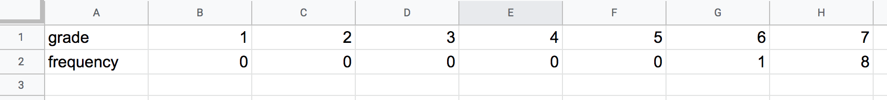
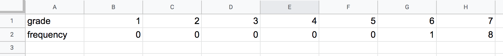

Quiz grade for Crafty Penguin

●How I created the histogram
(1) To reformat the json data file in csv that can be read by excel, I wrote a simple python program. This program strips off the son string, extract the grades, count the frequency of each grade, and reformat in a csv string.
#Code in (1):
data = ""
with open("data.txt", "r") as file:
data = file.read()
print("-----")
counter = {'1':0,'2':0,'3':0,'4':0,'5':0,'6':0,'7':0,'8':0,'9':0,'10':0,}
for i in range(38):
grade_start = data.find('"grade": ') + len('"grade": ')
grade_end = data.find(",", grade_start - 1)
grade = str(data[grade_start:grade_end])
data = data[grade_end:-1]
counter[grade] = counter[grade] + 1
print("grade,", end="")
for i in range(10):
print(str(i+1) + ",", end="")
print()
print("frequency,", end="")
for i in range(10):
print(str(counter[str(i+1)]) + ",", end="")
#Output of the code above:
grade,1,2,3,4,5,6,7,8,9,10,
frequency,0,0,0,0,0,1,8,16,11,2,
(2)Save the output in a csv file and open it on google sheet, which will produce a spreadsheet like this:

(3)Using the google spread sheet's insert feature, create a area chart using the spreadsheet. The reason for choosing the area chart is that the histogram in Google spreadsheet creates the x-axis based on range that is hard to interpret. So created the area chart to mimic the histogram.
#Code in (1):
#Output of the code above:
(2)Save the output in a csv file and open it on google sheet, which will produce a spreadsheet like this:

(3)Using the google spread sheet's insert feature, create a area chart using the spreadsheet. The reason for choosing the area chart is that the histogram in Google spreadsheet creates the x-axis based on range that is hard to interpret. So created the area chart to mimic the histogram.